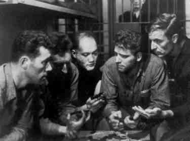
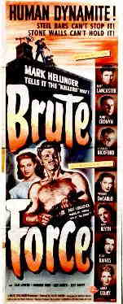

| BRUTE FORCE B+, B+ US/1947/BW/FULLSCREEN 1.33:1/MONO/96 MINUTES/DIRECTED BY JULES DASSIN/STARRING BURT LANCASTER, HUME CRONYN/ROAN/AUDIO INTERVIEW/SUPPLEMENTALS/CLV/$49.95 Often billed as the film that brought stardom to Burt Lancaster, Brute Force is a hard hitting prison drama that plays more as an ensemble showcase culminating in an ultimate confrontation between the evil Captain Munsey and convict leader Joe Collins. Director Jules Dassin helms the production with firm command and a direct story telling technique that benefits the movie greatly. The only diffusion of the powerful in your face approach are several short flashbacks added to bring some female presence to the screen, and as Dassin points out on the second audio track, they do not benefit Brute Force The final action scenes are staged with terrific energy With fury boiling over on several fronts at once, Dassin and Cinematographer Daniels capture this sequence brilliantly.  Screenwriter Richard Brooks’ treatment is born on the wave of social consciousness that pervaded America after World War II The prisoners seem like decent enough men when contrasted with Munsey. Lancaster and his cohorts are made to seem like the heroes, but after all, this is a film about a prison break and these men are criminals The Legion of Decency is well satisfied by the film’s end. Lancaster’s Collins has the raw physical power and seething psychological force underneath the surface to electrify the screen, yet he blends well with all the other players. Hume Cronyn sneers and slithers through his role as Munsey, relishing every sadistic moment. The excellent supporting cast is led by Charles Bickford as a con with influence, Howard Duff as a the GI gone astray, and Sam Levine as the victim of Munsey’s most graphic corporal display. Director of Photography William Daniels delivers first class images to compliment the crisp direction of Jules Dassin. His camera command delivers both the shadows and stark realities of prison life. Miklos Rozsa composed a highly dramatic and typically effective score for Brute Force. This a most handsome disc production. The stunning black and white images have been brought to laser with consummate professionalism. The contrast ratio is outstanding. Blacks offer depth and detail. The disc is consistently sharp without creating excessive artifacts. The transfer elements are in very good condition and the result is an image presented free of damage except for minor scratches and dirt. Brute Force looks as fresh and audacious as the day it was born with an excellent mono soundtrack embellishing the pictures. On the left analog audio track, Cary Roan has recorded an interview with director Jules Dassin. The interview was supposed to be conducted during a Dassin trip to New York, but when the trip didn’t happen, Roan recorded the questions and sent them to Dassin to record his answers. If I were Roan I would have taken the opportunity for a quick trip to Greece to meet Dassin on his turf. Though the sense of somewhat spontaneity is diminished, Dassin speaks to the questions almost as if Roan were in the room, creating the feeling of a lively exchange. Dassin’s reminiscences are rewarding. One wonders if Dassin’s image of Louis B. Mayer, MGM’s legendary leader, roaring at him a number of times was a whimsical reference to MGM’s screen symbol, Leo the Lion, or merely an unconscious metaphor. Dassin flatly states, "I want to forget all films I made for MGM." In recalling Brute Force, Dassin indicated that the flashback sequences water down the film and he objected to their use, though it was a battle he obviously lost. More of the commentary is related to The Naked City than to Brute Force, but it’s all interesting. The interview runs about one hour. The disc jacket indicates that the interview is in two parts on tracks analog 1 and 2, but in fact it is only on analog 1.  The laser disc concludes with a short presentation(less than 4 minutes) of a collection of production stills shown while the powerful sounds of Rozsa’s score play behind the images. The disc package includes a reproduction of the Brute Force publicity campaign book which is a very delightful addition to the enjoyment of this production. The Roan Group seems intent on making a positive impact on laser discs and special editions in particular. Brute Force is another fine treatment that will add to their growing reputation. |